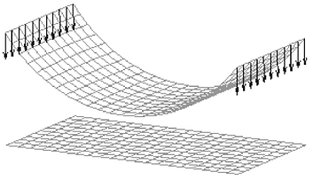
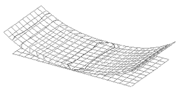

Glue and no penetration contact connectors
You can create Glue and No penetration contact connections between part, thin-body, or sheet metal faces and surfaces in an assembly. Connectors are needed to specify the faces that you want to remain connected during the simulation.
You can create glue and no penetration assembly connectors using the Auto command, Manual command, and the Create Study dialog box. For more information, see Assembly connectors.
When to use glue or no penetration contact connectors
Glue and no penetration contact connectors are the most commonly used connectors between faces and surfaces. Use the following guidelines and examples to determine when to choose these connector types.
-
Choose a Glue connector to create connections like stiff springs and to prevent relative motion in all directions, as for a rigid connection between regions.
Tip:Use a glue connector:
-
For welded plates.
-
In thermal studies.
-
When using the Large Displacement Solve option to solve a linear static study in which the deflection of the model is large relative to the dimensions of the model. Only Glue connectors are supported with this option.
Example:An assembly model containing sheet metal parts with narrow thicknesses.
Glue connectors are applied when there is an intersection between the faces, and the distance between them is less than or equal to the defined separation distance.
Glued surfaces must be coincident. They also should not be perpendicular, as this may produce errors in the solver.
Note:-
Use the Edge connector command, Type=Glue, to create nodal connections between edges and faces, or edges and surfaces, using a defined search distance and penalty factor.
-
Use the Bolt connector command to connect perpendicular edges.
-
-
No Penetration Contact
Choose a No Penetration Contact connector type to prevent faces that come into contact from penetrating, yet allowing finite sliding with optional friction effects. You can specify a friction coefficient in the Assembly Connector Properties dialog box.
Example:

Example:Use a No Penetration Contact connector for bearings and bolts. This allows both constant compression and gaps. But nominal clearances, such as those modeled in CAD systems, may cause problems in that meshes on the parts are not in physical contact with the part. This can allow rigid body motion, which may cause NX Nastran to fail. See Mesh interference: closing nominal gaps in bearings and bolted parts.
-
Mixing connector types
In assembly models with dissimilar parts, you may want to mix connectors.
Example:Use a bolt connector for bolt holes (A), and a no penetration contact connector to prevent penetration of two plates (B).

The No Penetration Contact connector is equivalent to the NX Nastran Linear Contact connector.
How do I
Create connectors based on assembly relationshipsCreate assembly connectors using the Auto command
Create manual connections between faces or surfaces
Replace target and source connection regions
Change connector region direction
Learn more
Assembly connectorsTarget and source connector regions
Assembly connector handles, labels, and symbols
Thermal connectors
Look up more details
Auto command barAssembly Connector command bar
Assembly Connector Properties dialog box